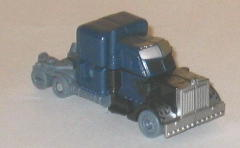
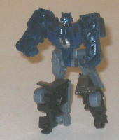
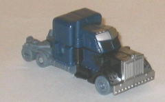
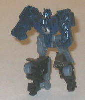
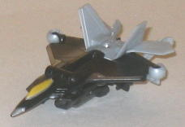
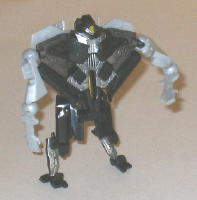

 
Allegiance : Autobot
Size : Legend
Difficulty of Transformation : Very Easy
Color Scheme : Dull dark greenish blue, dull gray, black, and some silver dark flat blue, and light sky blue
Individual Rating : 6.4
 Nightwatch
Optimus Prime vs. Stealth Starscream ("Allspark Battles" Legends)
Nightwatch
Optimus Prime vs. Stealth Starscream ("Allspark Battles" Legends)
Price
: ~$8 U.S.
Overall Rating
: 5.0
 Nightwatch
Optimus Prime
Nightwatch
Optimus Prime


Allegiance
: Autobot
Size
: Legend
Difficulty of Transformation
: Very
Easy
Color Scheme
: Dull dark greenish
blue, dull gray, black, and some silver dark flat blue, and light sky blue
Individual Rating
: 6.4
(NOTE: Because this is a repaint, this is not a full-blown review. This mainly covers any changes made to the mold and the color scheme, and merely compares it to the original Legends class Optimus Prime toy. For a review on the mold itself, read the review of the original Legends class Optimus Prime toy here .)
Based on the
Leader
class redeco of the same name
, Nightwatch Optimus Prime's colors certainly
do fit his name. The dark greenish blue is a pretty snazzy color, and the
silver flames work particularly well against it. Unfortunately, the gray
used for this version of Nightwatch Prime is exceedingly dull, and it's
not broken up by any of that cool "Allspark Power" electric blue like on
the Leader class version. Plus, the dark greenish blue used on this version
of Prime is a bit darker than on the Leader class version, which means
that it doesn't contrast with the black nearly as well-- in fact, it's
quite hard to tell where the blue ends and the black begins except under
strong light. Needless to say, that doesn't look all that great, since
you can't really see the black flame paint apps.
No mold changes have
been made to Legends class Nightwatch Optimus Prime.
Stealth
Starscream


Allegiance
: Decepticon
Size
: Legend
Difficulty of Transformation:
Very
Easy
Color Scheme
: Black, light milky
gray, and some dull metallic copper, dull yellow, dark red, and silver
Individual Rating
: 3.6
(NOTE: Because this is a repaint, this is not a full-blown review. This mainly covers any changes made to the mold and the color scheme, and merely compares it to the original Legends class Starscream toy. For a review on the mold itself, read the review of the original Legends class Starscream toy here .)
Those of you who wanted
Movie Skywarp, this looks like it's as close as you're going to get. Stealth
Starscream has been redone in a primarily black color scheme, though instead
of Skywarp's purple he has light gray/silver and dull coppper instead.
The dull copper on the robot chest really looks nice against the black--
both colors aren't used in conjunction with each other enough, really.
The silver against the black also looks awesome, though the light gray
plastic considerably less so. The gray used is just so dull almost no color
scheme can particularly spice it up, especially when it's used almsot entirely
on one end of the figure (the rear end of the jet mode) and with no paint
apps. The dull yellow and red colors make great accent colors for the face
and jet cockpit, however.
No mold changes have
been made to Stealth Starscream.
Neither of the color schemes on the toys in this versus pack are particularly bad (though in Nightwatch Prime's case, it's not as good as the original's), but the actual molds themselves are definitely below-average, even considering that they're Legends class toys. Only recommended for big Optimus Prime/Starscream fans and completists.
Reviews by Beastbot